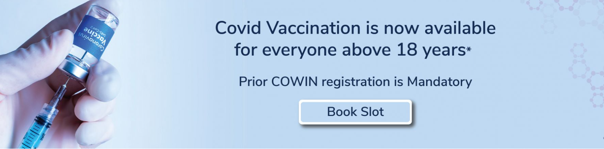
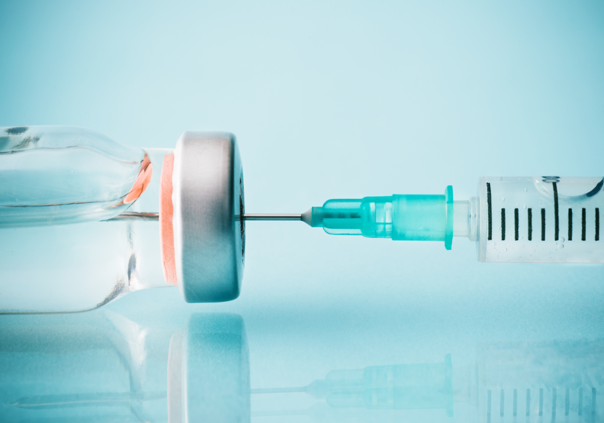

The world perceives us as a low-cost Indian healthcare service provider; what we are engaged in is a passionate journey to establish ourselves as the lowest-cost, high-quality healthcare service provider in the world.
At Spandan Health, we are convinced that 'quality' and 'lowest cost' are not mutually exclusive when it comes to healthcare delivery. In fact, we are well on our way to demonstrate that we are not running our institution as just another number-only business, but are attractively placed to create an affordable, globally-benchmarked quality-driven healthcare services model.
At Spandan Health, we will continue to trust what has worked for us in the past. We will keep our model predominantly asset-light; we will reinvest our accruals; we will engage with governments for land and help them achieve affordable healthcare promises made to their constituencies; we will rent premises from private owners and create small-to-large clinics within existing hospitals. As a result of this flexible approach, we will commission hospitals, medical facilities, and clinics across the breadth of this country, getting closer to patients and taking the promise of quality affordable healthcare to the doorstep of the country's millions.
We, at Spandan Hospital, sincerely believe that health is a state of complete physical, mental, and social well-being and not merely the absence of disease or infirmity.
Our health magazine presents a broad overview on how all of us can achieve the state of wellbeing without undergoing extensive investigations and treatments at the hospital.
Youngsters facing special challenges like self-esteem issues, substance abuse, depression, self-mutilation and suicidal tendencies can be guided in the right direction by appropriate health education.Eating right, exercising, taking minimal stress and sleeping well, play a vital role in prevention of infections and diseases.People tend to ignore their health until faced with medical complications. Health problems can be managed more effectively if detected at an early stage. Hence, health monitors have become the need of the hour. This is where the Wellness Clinic at SevenHills Hospital comes in to the picture to help you.
Oxygen available, ventilators, medicine, Remdesivir, vaccines available, plasma donors and blood donors available . Those who require please fill the given form with proper details.
Register for Requirements!
Total Vaccinated :11,15,22,451
Total Cases : 12,23,34,211
Discharged : 12,22,32,288
Deaths : 2,288
Data about COVID cases
Awards
Spandan Health is Frequently Recognised for its Commitment to Providing World-Class Healthcare & Excellent Patient Service